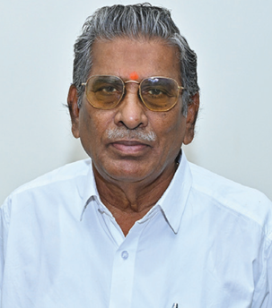
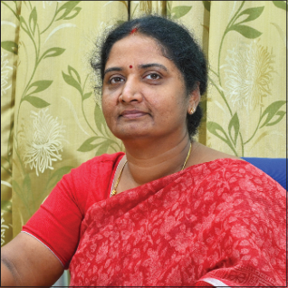

Sir C.R. Reddy Junior Women’s College

College Vision
“Ensuring Quality in Education by providing distinct environment of academic excellence with social commitment and Inculcation of values in young and aspiring minds”
College Mission
We are committed to: To promote academic excellence by providing a conducive ambience and infrastructure to develop application oriented courses, with necessary inputs and values with a view to shape the learners for all round development. To cultivate knowledge, skills, value and confidence in the students to grow, thrive and prosper. To promote academic exchange and strengthen academic- industry interfacing exploring the technology available to develop self- reliant individual by involving them in academic projects. To instigate the spirit of enquiry, integrity, leadership and deep sense of social justice among students to become socially responsible. To provide life skills for a successful career, and combat the competition on the society.

Sri Kilaru Prabhakar Rao
Correspondent

Smt. V. Rajya Lakshmi
Principal
About Sir C R Reddy College for Women
Eluru, the district headquarters of West Godavari District, is known for its historical background and as a centre for educational institutions. Two decades ago, opportunities for women to pursue higher education beyond SSC were far from reality.
The management of the parent institution, Sir C R Reddy College, which has been in existence for the last six decades, felt a dire need for a college exclusively for women. The inception of Sir C R Reddy College for Women opened wide the opportunities for girl students in and around Eluru.
Responding to the changing needs of the present day, courses and programs were expanded and reorganized to prepare students to face modern societal challenges with confidence.
Infrastructure & Facilities
- 20,155 Books, 22 Periodicals, 700 CD-ROMs
- Fully Equipped Laboratories
- 250 Computers with Internet Facility
- On-campus Hostel
- Qualified Teaching & Technical Staff